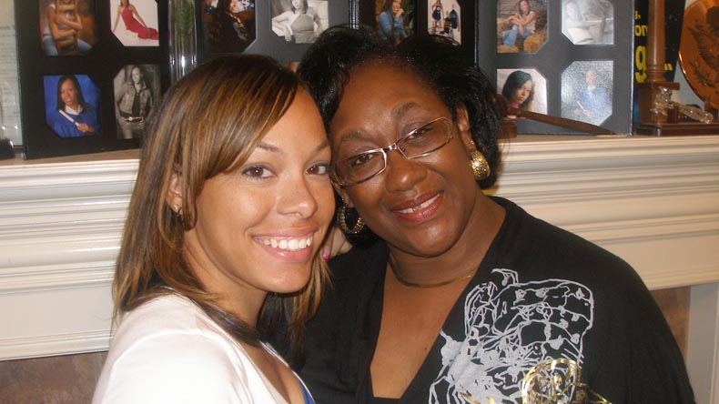
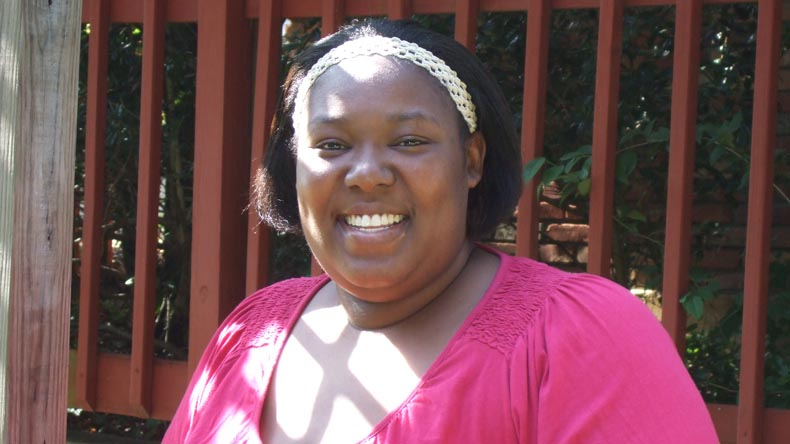
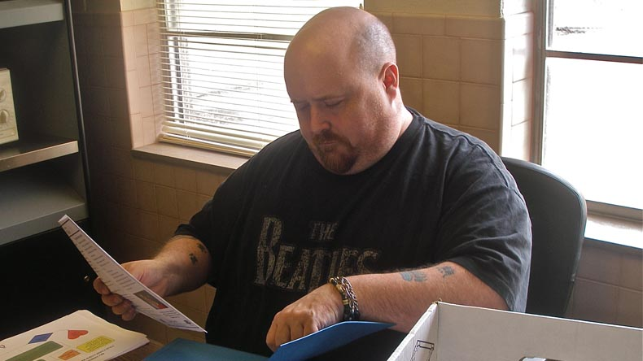
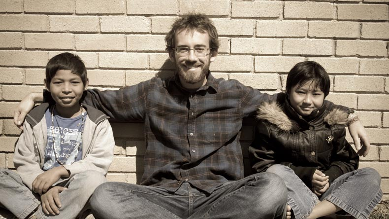
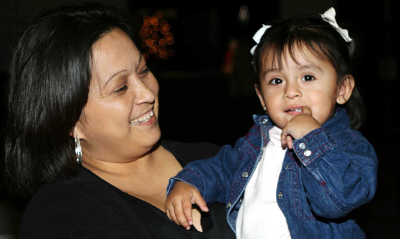

<!DOCTYPE html>
<html lang="en">
<head>  

  <link href="stylesheets/screen.css" media="screen, projection" rel="stylesheet" type="text/css" />
  <link href="stylesheets/print.css" media="print" rel="stylesheet" type="text/css" />
  <link rel="stylesheet" type="text/css" href="stylesheets/superfish.css" media="screen">
  <!--[if lt IE 8]>
      <link href="stylesheets/ie.css" media="screen, projection" rel="stylesheet" type="text/css" />
  <![endif]-->

  <script type="text/javascript" src="http://ajax.googleapis.com/ajax/libs/jquery/1.4.2/jquery.min.js"></script>

	<script type="text/javascript" src="js/hoverIntent.js"></script>
	<script type="text/javascript" src="js/superfish.js"></script>
	<script type="text/javascript" src="js/supersubs.js"></script>
  <script type="text/javascript" src="http://cloud.github.com/downloads/malsup/cycle/jquery.cycle.all.2.72.js"></script> 
  <script type="text/javascript" src='js/slider.js'></script>

</head>

<body class="bp two-col">
<div id="container">

<header>
  <div id="searchbar">
      <a href="">Home</a> | <a href="">Contact</a> <input type="text">
  </div>
  <div id="logobar"><a href="">Catholic Charities</a>
    <div id="creed">
      Providing Help<br />
      Creating Hope<br />
      Promoting Justice
    </div>
  </div>
  <navigation>
    <div id="nav_donate"><a href="" class="green awesome">Donate now</a></div>
    <div id='nav_container'>
    <ul id="nav" class="clearfix sf-menu">
      <li id="nav_home" class="current first"><a href="">Home</a></li>
      <li id="nav_about" class="dir"><a href="">About Us</a>
        <ul>
          <li><a href="">Frequent Questions</a></li>
          <li><a href="">Board of Directors</a></li>
          <li><a href="">Core Values</a></li>
          <li><a href="">Contact Information</a></li>
          <li><a href="">Employment</a></li>
        </ul>
      </li>
      <li id="nav_media" class="dir"><a href="">News and Events</a>
      <ul>
          <li><a href="">Events</a></li>
          <li><a href="">Photos</a></li>
          <li><a href="">Video</a></li>
          <li><a href="">Publications</a></li>
          <li><a href="">Calendar</a></li>
        </ul> 
      </li>
      <li id="nav_programs" class="dir"><a href="">Programs</a>
      <ul>
          <li class="dir"><a href="">Business Venture Services</a>
            <ul>
              <li><a href="">Translation and Interpreter Network (TIN)</a></li>
            </ul>
          </li>
          <li class="dir"><a href="">Child Welfare Services</a>
             <ul>
              <li><a href="">Assessment Center</a></li>
              <li><a href="">Therapeutic Foster Care</a></li>
              <li><a href="">Unaccompanied Refugee Minor</a></li>
            </ul>
          </li>
          <li class="dir"><a href="">Community Services</a>
            <ul>
              <li><a href="">Compassion Resource Network (CRN)</a></li>
              <li><a href="">Disaster Response Services</a></li>
              <li><a href="">Enrollment Solutions</a></li>
              <li><a href="">Financial Stability</a></li>
              <li><a href="">Financial Education and Credit Counseling</a></li>
              <li><a href="">HOMES</a></li>
              <li><a href="">The Lady Hogan Project</a></li>
              <li><a href="">Street Outreach Services (SOS)</a></li>
            </ul>
          </li>
          <li class="dir"><a href="">Family Services</a>
             <ul>
              <li><a href="">CARE</a></li>
              <li><a href="">Clinical Counseling</a></li>
              <li><a href="">Hand in Hand</a></li>
              <li><a href="">Healthy Start Initiative</a></li>
              <li><a href="">Pathways</a></li>
              <li><a href="">School Based Services</a></li>
            </ul>
       
          </li>
          <li class="dir"><a href="">Health Services</a>
             <ul>
              <li><a href="">St. Joseph Health Care Trust</a></li>
            </ul>
          </li>
          <li class="dir"><a href="">Refugee and Immigration Services</a>
            <ul>
              <li><a href="">Immigration Consultation Services</a></li>
              <li><a href="">Refugee Services</a></li>
            </ul>
          </li>
          <li class="dir"><a href="">Housing Services</a>
            <ul>
              <li><a href="">Casa, Inc</a></li>
              <li><a href="">Casa II, Inc / Casa Brendan</a></li>
              <li><a href="">Nuestro Hogar, Inc.</a></li>
            </ul>
          </li>
        </ul>
      </li>
      <li id="nav_involved" class="dir"><a href="">Get Involved</a>
        <ul>
          <li><a href="">Service Opportunities</a></li>
          <li><a href="">In Kind Needs</a></li>
          <li><a href="">Volunteer Center</a></li>
          <li><a href="">Donate Now</a></li>
        </ul>
      </li>
    </ul>
  </div>
  </navigation>
</header>

<div id="featured_stories">
<div id="upper_front">
  <div class="boxgrid caption">
    
    <div class="cover boxcaption">
      <h3>My Mother's Daughter</h3>
      <p>I've gone from being an innocent child to being an angry, out of control monster to being a motivated young woman. My name is Keshia Denise Roberts and this is my story.</p>
      <div class="readstory"><a href="" class="green awesome">See My Story</a></div>
    </div>
  </div>
  <div class="boxgrid caption">
    
    <div class="cover boxcaption">
      <h3>Casey's Mark</h3>
      <p>I didn't hear HIV positive at the time. I heard AIDS. So immediately I just broke down crying. I was a young woman with a son who was only 1 1/2 years old and I was HIV positive.</p>
      <div class="readstory"><a href="" class="green awesome">See My Story</a></div>
    </div>
  </div>
  <div class="boxgrid caption">
    
    <div class="cover boxcaption">
      <h3>On Quiet Feet</h3>
      <p>I started drinking when I was about 12 years old. Everybody was doing it. I drank for about two or three years, then I moved on. My addiction to drugs didn't just happen. It was a progressive thing.</p>
      <div class="readstory"><a href="" class="green awesome">See their story</a></div>
    </div>
  </div>
  <div class="boxgrid caption">
    
    <div class="cover boxcaption">
      <h3>Cool Guy Here</h3>
      <p>I have no idea what this guy's story is, but the picture is really cool and works well for what we are trying to do. For featured stories, we should really strive for artistic type photos.</p>
      <div class="readstory"><a href="" class="green awesome">See their story</a></div>
    </div>
  </div>
</div>
</div>

<div id="action_buttons">
<a href="#" class="green awesome">Donate Now</a>
<a href="#" class="blue awesome">Volunteer Check-in</a>
<a href="#" class="blue awesome">Newsletter Signup</a>
<a href="#" class="blue awesome">Careers</a>

</div>

<div id="content">
<div id="lower_front">

<div id="lower_front_left">
  <h2>May is National Foster Care Month</h2>

<p>We would love for you to help us get an early start on spreading awareness! The Therapeutic Foster Care Program is looking for qualified foster parents, and we are inviting you to be a part of the process. Becoming a foster parent is a great way to make a difference in the life of a child who has been abused or neglected.</p>

<p>Fostering abused and neglected children is very rewarding, and fostering through Catholic Charities of Fort Worth provides many additional benefits.</p>
<p>Foster parents are crucial in the healing process of these children, and each foster parent makes a huge difference in the life of a child. Becoming a foster parent also encourages spiritual growth, by putting the parent in the position to step out on faith and lean on God for strength.</p>
<p>Catholic Charities of Fort Worth offers additional benefits for foster parents, many that you will not find at other agencies. In addition to our Therapeutic Foster Care Program, our agency offers many other services, such as counseling, at no cost. Unlike many child placing agencies, Catholic Charities provides each foster family with 14 days of paid respite care per year, and we reimburse verified families for licensing fees. Our foster care program has been established for 25 years, and all staff members in the program have graduate level degrees. Catholic Charities foster parents receive 24 hour support from qualified professionals.</p>
<p>Please take a moment to think about who you might know that would make great foster parents. If you do We would also love the opportunity to come out and speak at your house of worship or community organization and share ways for groups to get involved.</p>
<p>If you or someone you know would like more information on being a foster parent, please contact Danielle Johnson at djohnson@ccdofw.org or 817-413-3939.</p>

</div>

</div>

</div>

<div id="sidebar">
  <div id="about_box">
    <h2>Who We Are</h2>
    <p>Catholic Charities serves the 28 counties in the Diocese of Fort Worth. We provide services to individuals, families and children among us in need as we advocate compassion and justice in our community.</p>
  </div>
</div>

<footer>
<table>
<tr>
  <td>
    <ul>
      <li class="footer_head">About Us</li>
      <li><a href="">Frequent Questions</a></li>
      <li><a href="">Board of Directors</a></li>
      <li><a href="">Core Values</a></li>
      <li><a href="">Contact Information</a></li>
      <li><a href="">Employment</a></li>
   </ul>
    <p>
    
    
    </p>
 </td>
  <td>
    <ul>
      <li class="footer_head">Media</li>
      <li><a href="">News and Information</a></li>
      <li><a href="">Photos</a></li>
      <li><a href="">Video</a></li>
      <li><a href="">Publications</a></li>
      <li><a href="">Newsletter</a></li>
    </ul>
  </td>
  <td>
    <ul>
      <li class="footer_head">Programs</li>
      <li class="dir"><a href="">Business Venture Services</a></li>
      <li class="dir"><a href="">Child Welfare Services</a></li>
      <li class="dir"><a href="">Community Services</a></li>
      <li class="dir"><a href="">Family Services</a></li>
      <li class="dir"><a href="">Health Services</a></li>
      <li class="dir"><a href="">Refugee and Immigration Services</a></li>
      <li class="dir"><a href="">Housing Services</a></li>
    </ul>
  </td>
  <td>
    <ul>
      <li class="footer_head">Get Involved</li>
      <li><a href="">Service Opportunities</a></li>
      <li><a href="">In Kind Needs</a></li>
      <li><a href="">Volunteer Center</a></li>
      <li><a href="">Donate Now</a></li>
    </ul>
  </td>
  <td>
    <p class="footer_head">Address</p>
    <p><a href="">
    249 West Thornhill Drive<br />
    Fort Worth, Texas 76115</a></p>
    <p class="footer_head">Phone</p>
    <p>817-534-0814</p>
    <p>
    
    
    

    </p>
  </td>
</tr>
</table>
<div id="copyright">&copy; 2010 Catholic Charities - Diocese of Fort Worth 
</div>
</footer>

</div>
</body>
</html>
